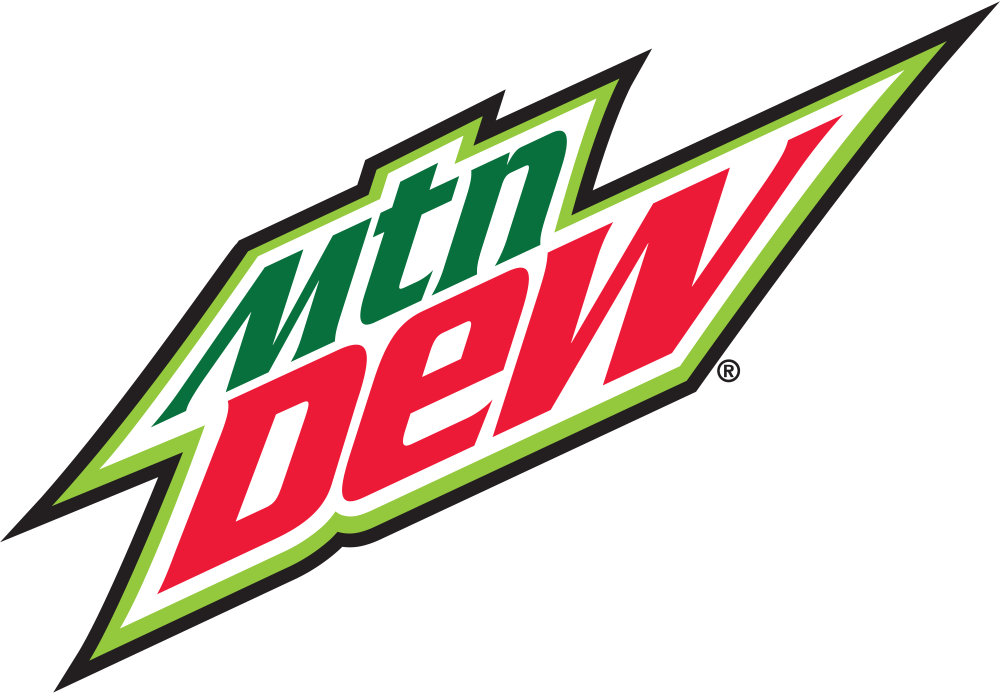

Week 2:
- Sam(up 1)- Five QB interceptions and Two running back heroes equals WIN.
- Colt(up 1)- Usually by this point colt has renounced religion and all hope.
- Bryan(up 1)- A win is a win. Even if it's Caleb.
- Kyler(up 1)- Second highest scorer, fourth in power rankings. Possible conspiracy against this maverick owner?
- Andrew(up 3)- If this guy ever learns who to play off his bench we are all fucked.
- Jake(up 3)- Two gods, one L.
- Zack - Josh Allen can only do so much to try and save this self inflicted starter decision disaster.
- Ethan(up 3)- Not last!
- Teteo(down 8)- Teteo's first two picks may have been duds, but the entire Jets offense is ready to take this team to the next level.
- Jason - It's the Pitts.
- Josh(down 5)- Losing by one point is always a tragedy. Knowing that if you had started no one in the flex and you would have won? Enough to crush a man's soul.
- Caleb - 9 players, not even 80 points. You'd better be thanking your lucky stars that the Browns so happily employ human scum because without Kareem Hunt we would have tossed the season away and just assigned you last place punishment in week 1. Najee dead, Etienne already usurped by James Robinson, Prescott fucked, CeeDee bust, Kittle made of glass. Only one option left. Jamaal Williams SZN.

SHITTER OF THE WEEK
Week 1:
- Teteo
- Sam
- Colt
- Bryan
- Kyler
- Josh
- Zach
- Andrew
- Jake
- Jason
- Ethan
- Caleb